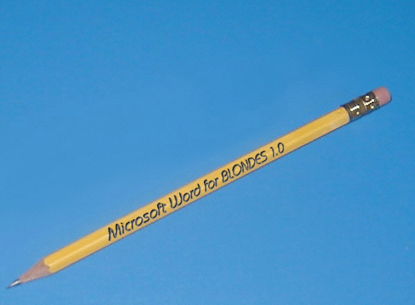
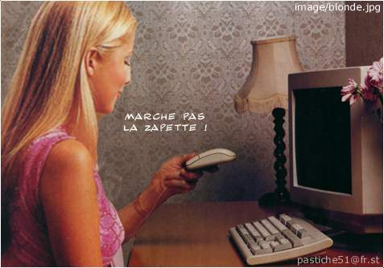
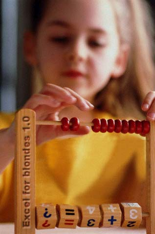

Les " blonde jokes"
Typically american, les "blondes jokes" sont les enfants
du "politically correct", qui interdit de se moquer de quelque minorité
que ce soit (Juifs, Noirs, homos...). Ne restaient donc comme sujet de
blagues que les WASP - dont les blondes, censées être d'une
insondable bêtise.
A l'origine, c'étaient d'ailleurs surtout les 'blondasses', filles
bêtes, décolorées et faciles, qui étaient visées.
Les traductions en français ont entraîné une certaine
dérive sémantique - mais quelle importance ? ;-)
 NB
: Certaines jokes sont cochonnes,
vous ne direz pas qu'on ne vous aura pas prévenu.
NB
: Certaines jokes sont cochonnes,
vous ne direz pas qu'on ne vous aura pas prévenu.
NB bis : Tout au ,
of course :-)
(La plupart des blagues de cette compilation proviennent du forum
fr.rec.humour
et d'autres sites Web, comme
le
Web pour Rigoler)
Les blondes - La revanche
des blondes - Les rousses
- Pourquoi interdit-on les pauses-café au travail aux blondes
?
- Car c'est trop chiant après de leur réaprendre à
bosser.
- Pourquoi les blondes tondent-elles le gazon avec une tondeuse électrique
?
- Pour retrouver leur chemin jusqu'à la maison.
-
Que dit une blonde en voyant une peau de banane par terre ?
- " Ah non ! je vais encore tomber ! "
- Pourquoi les blondes aspergent-elles parfois leur ordinateur ?
- Elles veulent surfer sur Internet.

Une blonde découvre que son copain la trompe avec une brune.
Folle de rage, elle attend un jour où il va la retrouver, prend
un revolver, et déboule en trombe dans la chambre où roucoulaient
les deux tourtereaux. Ceux-ci se mettent à hurler à la vue
du flingue.
La blonde, une lueur haineuse dans les yeux, dirige l'arme contre elle-même.
- "Non, ne fais pas ça ! crie son infidèle copain.
- Ta gueule, répond la blonde, après c'est ton tour !
"
- Comment faire pour brûler l'oreille d'une blonde ?
- En lui téléphonant quand elle est en train de repasser.
- Comment appelle-t-on une blonde intelligente ?
- Un Golden Retriever.
- Pourquoi lors d'un orage électrique les blondes se placent-elles
toujours devant la fenêtre ?
- Elles veulent être sur la photo.
- La définition de l'ignorance crasse ?
- Au moins 156 blondes.
- Pourquoi la blonde a-t-elle été virée de l'usine
de M&M's ?
- Elle triait et virait tous les W.
Une blonde appelle les pompiers, ça brûle dans son grenier.
- " Très bien, nous arrivons. Comment arrive-t-on chez vous
?
- Quoi ?!??!! Vous n'avez plus les grosses voitures rouges ?"
Un célèbre animateur de TV, excédé
par les histoires qui courent sur les blondes, décide d'organiser
un show pour démontrer qu'elles sont aussi intelligentes que le
reste de la population.
Il réunit donc 8000 blondes au zénith, fait venir
la presse, diffuse l'émission sur toutes les chaînes du service
public et même sur Internet, bref, le grand jeu.
Histoire de chauffer un peu la salle, il demande une volontaire
pour un premier test facile. Une blonde d'entre les blondes est choisie,
et l'animateur lui pose cette question :
"Combien font 15 + 15 ?"
Après 5 secondes de réflexion, la blonde répond
"28". Catatastrophe !
Gros plan sur la mine défaite de l'animateur, qui commence
à regretter son initiative. Mais les blondes de l'assistance viennent
à son secours en scandant d'une même voix :
"Donnez-lui une autre chance ! Donnez-lui une autre chance !".
L'animateur retrouve le sourire, explique que le trac, l'émotion,
une mauvaise acoustique... Allons, c'est pas grave, une autre question
:
"Combien font 10 + 10 ?"
La blonde prend le temps de la réflexion, consciente de
l'enjeu. Au bout d'une minute, elle répond "92 !".
L'animateur est effondré, sa carrière est fichue,
il va devenir la risée de la profession... Mais les blondes se remettent
à crier :
"Donnez-lui une autre chance ! Donnez-lui une autre chance !".
A vrai dire, ça ne peut guère être pire maintenant.
Alors il pose une troisième question :
"Combien font 2 + 2 ?"
La blonde hésite, puis au bout de cinq minutes, hasarde un timide
:
"4 ?".
Et dans la salle :
"Donnez-lui une autre chance ! Donnez-lui une autre chance !!".
C'est l'histoire d'une rousse, d'une brune et bien sûr
d'une blonde. Les trois femmes se retrouvent dans une salle. C'est dans
cette salle que le Miroir de la Vérité repose. Si une personne
ne dit pas la vérité devant ce miroir, elle est directement
aspirée dans le néant.
La rousse commence : "Je pense être la plus belle des
rousses." déclame-t-elle avec flamme. Et là, GLOURPS, elle
est aspirée par le Miroir et elle disparaît.
Arrive la brune. "Je pense être la plus belle des brunes."
Et là, GLOURPS.
Arrive enfin la blonde. "Je pense..." : GLOURPS.
- Pourquoi les blondes ne veulent-elles jamais de siège près
d'un hublot dans les avions ?
- Parce qu'elles viennent juste de se sécher les cheveux et
ne veulent pas gâcher leur mise en pli.
- Comment fait-on pour noyer une blonde dans un sous-marin ?
- On cogne à la porte.
- Si un jour vous avez besoin d'une greffe de cerveau, si vous avez
le choix entre le cerveau d'une brune et celui d'une blonde, lequel choisissez-vous
?
- Celui de la blonde, bien sûr, il n'a jamais servi.
Une brune, une rousse et une blonde sont arrêtés pour
espionnage. Elles sont condamnées à mort. On les emmène
au peloton d'exécution.
La brune doit être fusillée la première :
- "Armez... En joue... "
Et soudain la brune crie : "OURAGAN !" et elle est emportée
dans une gigantesque bourrasque de vent. Les soldats la voient juste faire
un pied de nez en partant au loin.
Les militaires ne comprennent rien mais décident de poursuivre
avec la rousse :
- "Armez... En joue..."
Et soudain la rousse hurle : "PLUIE !" et elle est emportée
par une déferlante d'eau venue du ciel. Elle a juste le temps de
leur faire un bras d'honneur avant de disparaître.
Les militaires commencent à trouver ça bizarre. Ils ajustent
la blonde :
- "Armez... En joue..."
Et soudain la blonde hurle : "FEU !"
- Pourquoi une blonde saute-t-elle de joie quand elle achève
un puzzle de 20 pièces en moins de 6 mois ?
- Sur la boîte, il est marqué " 4 à 6 ans ".
- Pourquoi les blondes sont-elles immunisées contre la maladie
de la vache folle ?
- Parce que leur cerveau est déjà une éponge.
- Que faire quand une blonde vous envoie une grenade ?
- La dégoupiller et la renvoyer.
- Pourquoi les blondes riches conduisent-elles des BMW ?
- Parce qu'elle ne sont pas capables d'épeler PORSCHE.
Une blonde appelle son fiancé :
- "Salut ! Ecoute, j'ai un probleme : je viens d'acheter un puzzle,
mais je n'arrive pas à le faire ! Je deviens folle ! Les pièces
se ressemblent
toutes ! Je ne sais pas...
- Attends, calme-toi ! Quel est le dessin ?
- C'est un coq rouge...
- Bon, j'arrive et on va le faire ensemble, d'accord ? "
Le jeune homme rejoint sa blonde. Quand il arrive :
- "Alors, il est où ce puzzle ??
- Il est ici..."
(Silence)
- "Ok... on fait comme ça : on remet tous les cornflakes dans
la boîte et on n'en parle plus, d'accord ?"
- Combien de blondes faut-il pour changer une ampoule ?
- Aucune, il ne faut surtout pas les laisser faire, elles casseraient
tout avec le marteau.
- Comment une blonde fait-elle pour changer une ampoule ?
- Elle attend l'automne pour que l'ancienne tombe toute seule et le
printemps pour qu'une belle ampoule toute neuve repousse à sa place.
Si ça ne marche pas, à la saison suivante, elle prend la
précaution de traiter à la bouillie bordelaise au préalable
!
C'est une blonde qui va à la pharmacie s'acheter une boîte
de suppositoires. Lorsqu'elle arrive chez elle, elle en mange un et finalement
avale toute la boîte !
Le lendemain elle retourne à la pharmacie et achète une
autre boite, puis dès qu'elle arrive chez elle, elle les mange tous
!
Et ainsi de suite durant quatre autres jours. Le cinquième jour,
elle demande au pharmacien une autre boîte de suppositoires. Alors
ce dernier ne peut s'empêcher de lui dire :
- "Voyons madame, est-ce que vous les mangez vos suppositoires ?"
Et la blonde répond d'un ton méprisant : "Non, je me
les fourre dans l'cul ! "
Une blonde rencontre une autre blonde de ses copines :
- "Je viens d'avoir un test de grossesse.
- C'était dur les questions ? "

- Pourquoi une blonde préfère-t-elle faire deux gâteaux
plutôt qu'un seul plus gros en doublant tous les ingrédients
de la recette ?
- Aucun four ne va jusque 600°C.
- Pourquoi une blonde reste-t-elle souvent vingt minutes à fixer
un pack de jus d'orange ?
- Il y est marqué "concentré".
[Elle passe mieux en anglais]
Une blonde entre dans un magasin d'électroménager et
demande à acheter une télé.
-"Désolé, nous ne pouvons pas vendre cette télé
aux blondes", répond le vendeur.
Choquée, la blonde s'en va chez elle, réfléchit,
puis se teint en brune et revient, et redemande à acheter la télé.
-"Désolé, répète le vendeur, je ne peux
pas vendre cette télé à une blonde.
- Mais enfin, comment m'avez-vous reconnu ??!!
- Ce n'est pas une télévision, c'est un four micro-ondes."
- Combien de blondes faut-il pour changer une ampoule ? (bis)
- Deux : une pour prendre un verre de Pepsi Diet, l'autre pour appeler
"Papa !"
(Je laisse celle-là en anglais, elle est intraduisible)
A blonde was complaining to her friend about constantly being called
a dumb blonde. Her friend tells her "go do something to prove them wrong!
Why don't you learn all the state capitals or something?" The blonde thinks
this is a great idea, and locks herself up for two weeks studying.
The next party she goes to, some guy is making dumb blonde comments
to her. She gets all indignant and claims, "I'm NOT a dumb blonde. In fact,
I can name ALL the state capitals!"
The guy doesn't believe her, so she dares him to test her. He says
"Okay, what's the Capital of Montana?"
The blonde tosses her hair in triumph and says, "That's easy! It's
M!"
Partant du principe qu'au fil des siècles la sélection
naturelle élimine impitoyablement les êtres inadaptés,
l'existence des blondes amène à conclure logiquement que
ce principe est erroné.
- Que faire quand une blonde vous lance une goupille ?
- Prenez vos jambes à votre cou... elle a une grenade dans la
bouche !
- Que signifie un ruban noir autour du cou d'une blonde ?
- Ceinture noire en soufflage de bulles de chewing-gum.
- Pourquoi les blondes mettent-elles de la glace dans le frigo ?
- Pour le garder froid.
- Que dit-on d'une blonde avec un demi-cerveau ?
- Qu'elle est douée.
- Quelle est la différence entre une ampoule et une blonde ?
- Une ampoule c'est une lumière, mais une blonde, c'est plus
facile à brancher !
A une jolie femme, ne dites pas qu'elle est belle, elle le sait. Dites
lui qu'elle est intelligente, elle l'espère...
C'est une blonde qui est au lit chez elle avec son amant lorsque le
téléphone sonne. Elle décroche et entame une courte
conversation. Puis elle raccroche et se tourne vers le gars en lui disant
:
- "C'était Gérard. Il m'a dit de ne pas m'inquiéter
et de ne pas l'attendre ce soir car il joue aux cartes avec toi."
Une blonde
est avec son mec du jour. Il lui demande en rigolant :
- "Tiens, c'est normal que t'aies un bas rouge et un noir ?
- Ah, m'en parle pas ! En plus j'en ai une deuxième paire comme
ça ."
- Pourquoi n'y a-t-il pas de liftières bondes ?
- Elles ne connaissent pas le chemin.
- Pourquoi une blonde laisse-t-elle toujours des glaçons dans
le réfrigérateur ?
- Pour que le frigo reste froid.
- Pourquoi les blondes prennent-elles la pilule ?
- Pour savoir quel jour on est.
- Que dit une blonde recevant une crotte d'oiseau sur la tête
?
- "Heureusement, les vaches ne volent pas"
- Qu'est-ce qu'une blonde avec deux neurones ?
- Une blonde enceinte.
Une blonde a failli mourir alors qu'elle faisait du cheval.
Tout allait bien jusqu'à ce que le cheval commence à
ruer dans tous les sens sans aucun contrôle. La blonde essaya de
se cramponner par tous les moyens, mais fût malgré tout désarçonnée.
Son pied étant pris dans l'étrier, elle tomba sur
le sol la tête la première, et sa tête frappa alors
plusieurs fois le sol alors que le cheval continuait sa folle cavalcade.
Alors qu'il n'y avait plus d'espoir et qu'elle venait de perdre
conscience, le gérant du magasin arriva et débrancha la prise.
- Que dit une blonde en s'apercevant qu'elle est enceinte ?
- " Chouette ! J'espère qu'il est de moi..."
C'est une blonde qui va faire ses courses en voiture chez Karouf lorsqu'une
énorme averse de grêle lui tombe dessus. Des grêlons
gros comme des oeufs de pigeons viennent marteler la carrosserie de la
voiture !
Après l'averse, le capot, le toit et le coffre de la voiture
portent les marques des impacts, et la conductrice se dirige tout naturellement
vers le carrossier le plus proche.
Le carrossier après avoir constaté les dégâts
lui donne son devis : 20 000 francs de réparations. La blonde trouve
la note un peu salée pour sa Daf 55 automatique qui n'est plus cotée
à l'argus depuis 1980.
- "Enfin monsieur le carrossier, n'y a-t-il pas un moyen de faire les
réparations à moindre coût ?" demande-t-elle.
En rigolant, le garagiste lui répond :
- "Peut-être qu'en soufflant par le pot d'échappement
de toutes vos forces vous arriverez à faire disparaître
les creux !"
La fille rentre chez elle, et à peine le pot d'échappement
a-t-il eu le temps de refroidir qu'elle essaie la technique prescrite par
le
carrossier.
Elle est là avec la bouche sur le pot d'échappement en
train de souffler de toutes ses forces, lorsque sa voisine (une autre blonde)
arrive et s'affole :
-"Mais ... qu'est-ce que tu fais ? Tu ne veux pas te suicider tout
de même ?!
- Meuh non," la rassure la première, "je suis simplement en
train de souffler dans le pot d'échappement pour décabosser
la carrosserie de ma Daf !"
- "Mais qu'est-ce que t'es conne!" répond la voisine, "Ça
ne marchera jamais: t'as oublié de remonter ta vitre conducteur
!"
- Comment meurt un neurone de blonde ?
- Comme il a vécu : seul.
- Quelle est la différence entre une blonde et une Porsche ?
- On ne prête pas sa Porsche.
- Pourquoi les blondes ne changent-elles les couches de leur bébé
que toutes les semaines ?
- Parce que c'est marqué : "De 9 à 12 kilos"
- Qu'est-ce que les blondes ont souvent tatoué sur leur bras
?
- Leur adresse.

- Pourquoi les blondes ont-elles des bleus autour du nombril ?
- Parce que ça existe aussi, les gars blonds.
- Quelles sont les pires six années de la vie d'une blonde ?
- L'année du bac.
Une blonde en larmes arrive au bureau et immédiatement son patron
vient la voir :
- "Mais que se passe t-il ma petite Georgette ?"
Georgette explique :
- "Ce matin, juste avant de partir travailler, j'ai reçu un
coup de fil qui m'annonçait la mort de ma mère."
Le patron compatissant propose immédiatement :
- "Vous devriez rentrer chez vous et vous reposer, ma petite Georgette."
Ce a quoi la blonde répond :
- "Non, j'ai besoin de me changer les idées et c'est en travaillant
que j'y parviendrai le mieux..."
Quelques heures plus tard, le patron vient revoir son employée.
Il la retrouve effondrée sur son bureau, pleurant toutes les larmes
de son corps.
Il demande, angoissé :
- "Ca ne va pas mieux ma petite Georgette ?"
La blonde répond :
- "C'est horrible... Je viens de recevoir un coup de fil de ma soeur,
sa mère est morte elle aussi !"
- Quel est l'intérêt d'être marié à
une blonde ?
- On peut se garer sur les zones pour handicapés.
- Qu'est-ce qu'une blonde en train de lire un livre sans image ?
- Une tentative de suicide.
La CIA décide de recruter un tueur à gages. Apres toute
une série de sélections, d'entretiens et d'essais, il ne
reste que trois finalistes, deux hommes et une femme BLONDE. Pour
le choix final, les agents de la CIA mettent l'un des hommes devant une
grande porte métallique et lui remettent un pistolet.
- "Nous devons être sûrs que vous suivrez nos instructions,
quelles que soient les circonstances. Derrière cette porte, vous
trouverez votre femme assise sur une chaise, vous devrez la tuer ! "
L'homme dit :
-"Vous n'êtes pas sérieux ? Je ne pourrai jamais tuer
ma femme !"
L'agent dit :
-"Alors vous n'êtes pas l'homme fait pour ce travail."
On donne au deuxième homme les mêmes instructions. Il
prend l'arme et entre dans la salle. Tout est calme pendant environ cinq
minutes, puis l'homme revient, les larmes aux yeux.
- "J'ai essayé, mais je ne peux pas tuer ma femme ! "
L'agent dit :
- "Vous n'êtes pas fait pour le job. Emmenez votre femme et rentrez
à la maison."
Enfin, c'est le tour de la femme. On lui donne encore une fois les
mêmes ordres, en lui indiquant qu'elle doit tuer son mari.
Elle prend le pistolet et entre dans la salle. On entend des tirs,
un coup après l'autre.
Puis on entend des cris, des coups sur les murs, des meubles
qui se brisent.
Après quelques minutes, tout redevient calme... La porte
s'ouvre lentement et la femme sort. Elle s'essuie la sueur du front et
dit :
- "Vous auriez pu me dire que le pistolet etait chargé à
blanc ! J'ai dû le battre à mort avec la chaise !"
- Pourquoi une blonde met-elle un sac de couchage dans sa voiture ?
- Au cas où elle s'enferme à clef.
C'est une blonde qui a un sérieux besoin d'argent. Elle
décide d'enlever un enfant et de demander une rançon.
Elle entre dans une cours d'école et
attrape un petit garçon par le bras. Elle le force à
aller derrière un arbre dans le fond de la cours de récréation.
Elle lui dit :
"Écoute! Je viens de t'enlever et je ne te rendrai à
tes parents que s'ils paient la rançon."
Elle prend un morceau de papier sur lequel elle écrit :
"J'ai enlevé votre enfant. Si vous ne m'envoyez par 400
000 F demain, vous ne le reverrez plus. Vous mettrez l'argent dans
une valise et l'enverrez la porter derrière le gros arbre dans le
fond de la cours de récréation à 8h demain matin."
Elle attache la note au manteau du petit garçon et l'envoie
chez lui.
Le lendemain matin, le petit garçon arrive derrière l'arbre
avec la valise pleine de billets, auxquels est jointe une note :
"Comment pouvez-vous faire ça à une consoeur blonde ?"
Une blonde arrive aux urgences avec le bout de son index
carbonisé.
- "Mais qu'est-ce qui vous est arrivé, lui demande-t-on après
les premiers soins ?
- J'ai essayé de me suicider au revolver.
- Un suicide en vous tirant sur le doigt ??
- Ben d'abord j'ai mis le canon entre mes seins, et je me suis dit
que je les avais payés 100 000 balles. Puis je l'ai mis dans la
bouche, mais ça m'avait coûté 20000 F pour remettre
mes dents d'aplomb. Alors je l'ai mis dans mon oreille. Et comme je me
suis dit que ça allait faire du bruit, je me suis bouché
l'autre oreille avec ce doigt. Et j'ai tiré."
- Comment appelle-t-on une blonde derrière un volant ?
- Un airbag.
- Une blonde risque-t-elle la mort sur un passage piéton ?
- Oui, si le feu passe au rouge pour les piétons quand elle
traverse.
- Pourquoi est-ce que les blondes n'aiment pas la soupe en sachet ?
- Elles n'arrivent jamais à mettre assez d'eau dans le sachet.
- Pourquoi les blondes marquent-elles LODA sur leurs chaussures ?
- Les Orteils D'Abord.
- Qu'est-ce qui peut frapper une blonde sans même s'en rendre
compte ?
- Une pensée.
Une blonde entre dans une parfumerie :
- "Bonjour. J'aimerais un déodorant pour mon mari.
- Bien sûr madame. Vous voulez un déo à boule ?
- Non. C'est surtout pour les dessous de bras."
- Combien de temps il faut à une blonde pour changer une ampoule
?
- Heu... c'est quoi une ampoule ?
- Quelle est le point commun entre une blonde et une tortue ?
- Sur le dos, elles sont baisées.
- Comment sait-on qu'une blonde a utilisé votre traitement de
texte ?
- Il y a du correcteur blanc sur l'écran.
Deux brunes et une blonde sont invitées chez un prince texan
du pétrole. Toutes trois se sont perdues et arrivent complètement
en retard chez le type. Elles vont donc pour s'excuser :
- Brune 1 : " Sorry I'm late... "
- Brune 2 : " Sorry I'm late too... "
- Blonde : " Sorry I'm late three... "

Le CNRS tente de créer un programme informatique d'intelligence
artificielle. En utilisant les algorithmes habituels, on aboutit à
un logiciel dont les réactions s'approchent de celles d'un enfant
de 3 ans.
C'est une belle performance, mais elle reste insuffisante. Un chercheur
a eu une idée révolutionnaire : modéliser l'intelligence
d'une blonde, objectif beaucoup plus facile à atteindre, et ajouter
en fin de programme le coefficient multiplicateur -1, ce qui inverse le
résultat.
- Pourquoi les blondes mettent-elles des sous-vêtements ?
- Ca tient chaud aux chevilles.
Un médecin reçoit une blonde dans son cabinet. Il lui
dit de se déshabiller.
Elle se met en sous-vêtements mais garde son walkman. Le médecin
trouve ça gênant au bout d'un moment car il doit répéter
la moitié de ce qu'il lui dit. Il lui demande d'enlever son casque.
La blonde accepte et trois secondes après s'écroule. Morte.
Le médecin, après avoir tout tenté en vain pour
la sauver, en attendant l'ambulance, écoute distraitement le walkman
et il entend :
- " Inspirer... Expirer... Inspirer... Expirer..."
Un jeune gars réussit à ramener une blonde chez lui après
l'avoir draguée le soir même dans une discothèque.
Après la séance de ça-va-ça-vient rituelle,
le gars un peu niais se tourne vers la fille et lui demande :
- "Est-ce que j'étais le premier avec qui tu faisais l'amour
?"
Et la fille regarde son visage sous toutes les coutures et lui répond
:
- "C'est possible. Ton visage me dit quelque chose."
- Pourquoi les blondes se lavent-elles les cheveux dans l'évier
?
- Parce que c'est là qu'on est supposé laver les légumes.
- Quelle est la différence entre une blonde et une porte...?
- La porte ne dit pas "Oh Oouiiiiiiiiiii !!!!" quand on la défonce.
- Comment savoir que c'est une blonde qui vous a envoyé un fax
?
- Il y a un timbre.
- Pourquoi les blondes ont-elles des bouteilles vides au frigo ?
- Pour les copains qui ne boivent pas.
Une blonde fait l'amour avec un mec. Au bout d'un moment elle lui demande
:
- "T'as pas le sida au moins ?
- Mais non ! "
Ils continuent puis la blonde redemande:
- "T'es VRAIMENT sur que t'as pas le sida ?
- Mais je te dis que non ! Et puis pourquoi cette question ?
- Parce que ca me ferait chier de le choper une deuxième fois!"
C'est deux blondes qui passent dans une décapotable (normal)
et qui voient au milieu d'un champ de blé une autre blonde, dans
une barque, qui rame..
- "Tu vois (dit l'une à l'autre) c'est ce genre de blondes qui
nous font passer pour des gourdes.
- Oui tu as raison, même que si je savais nager, j'irais lui
en coller une bonne."
- Comment appelle-t-on une fausse blonde ?
- Une erreur.
- Comment appelle-t-on une vraie blonde ?
- Irrécupérable.
- Quel point commun y a-t-il entre une blonde et une pipe ?
- Presque aucun : si on prend autant de plaisir à les bourrer
et à les tirer, on ne prête jamais sa pipe.
- Quelle est la différence entre le téléphone
et une blonde ?
- Le téléphone n'est pas gratuit.
- Comment une blonde cherche-t-elle à tuer un oiseau ?
- En le jetant d'une falaise.
C'est deux blondes qui faisaient du stop sur une route. Le soir venu,
elle décident de planter la tente pour passer la nuit..
- " On va planter la tente sur le bas coté de la route, propose
l'une.
- Non, non tu rigoles, on va la mettre au milieu de la route, c'est
plus plat. "
Le lendemain matin, en se levant elles voient un camion complètement
explosé sur le bas côté de la route, le cadavre du
chauffeur est visible...
- " Ah tu vois, dis la seconde, on a bien fait de planter la tente
au milieu de la route..."
- Qu'est-ce qui fait " Vroummm ! Screeech ! Vroummmmm !
Screeeeech ! Vroummmm ! Screeeeech ! " ?
- Une blonde en voiture à un feu orange clignotant !
- Quels préliminaires réclament les blondes ?
- Qu'on leur arrache leurs sous-vêtements.
Une blonde se dirige vers sa boite aux lettres, regarde dedans, referme
la petite porte et rentre chez elle. Quelques minutes plus tard,
elle ressort, va vers la boîte aux lettres, regarde dedans,
referme la petite porte et rentre chez elle. Elle répète
ce manège plusieurs fois avant qu'un voisin qui assistait
à la scène ne lui demande :
- "Vous devez attendre une lettre ou un paquet très important
aujourd'hui !"
La blonde répond:
- "Non, c'est juste que ce foutu ordinateur n'arrête pas
de me dire que j'ai du courrier !"
- Pourquoi Citroën a-t-il
pris une blonde pour faire
ses crash-tests dans les pubs télé ?
- S'ils avaient pris une brune, elle aurait freiné.
- Qu'est-ce qui fait "VROUM, SCREECH, VROUM, SCREECH, VROUM, SCREECH"
?
- Une blonde en voiture à un feu orange clignotant.
C'est l'histoire d'un mec qui voulait se trouver une blonde pour la
soirée. Il rentre dans un bar et aussitôt arrivé, il
va voir une belle blonde assise dans un coin.. Alors ils se parlent pendant
quelques instants, pour la forme, et décident d'aller dans l'auto
du gars.
Ils commencent à s'embrasser et à se caresser sans relâche...
Le gars se disait qu'il fallait bien qu'il passe à l'acte le soir
même et demande alors à la blonde :
- "Ça te tentes pas d'aller faire un p'tit tour sur le siège
arrière ??? "
La blonde lui répond :
-" Non... Pas vraiment. "
Le gars ne dit rien mais est bien décidé à passer
à l'acte. Alors il redouble d'ardeur et continue à embrasser
la fille. Trente minutes plus tard, il reposa sa question :
- "Est-ce que tu veux y aller à l'arrière ? "
Elle répond :
- "Ben... non ! "
Alors le gars exaspéré :
- " Mais pourquoi ?
- Mais je veux rester avec toi, moi ! "
- Pourquoi
les blondes ne mangent-elles pas de bananes ?
- Parce qu'elles ne trouvent pas la fermeture éclair.
- Qu'est-ce que l'on dit à une blonde qui a deux coquards
(un à chaque oeil) ?
- Rien du tout, parce que l'on vient déjà de lui
expliquer deux fois !
Une blonde entre dans une pharmacie :
- "Avez-vous des lunettes ?
- Pour le soleil ?
- Non non, pour moi."
- Que se passe-t-il quand une blonde française émigre
en Belgique ?
- Le QI moyen de chacun des deux pays augmente.
Une secrétaire blonde vient de se faire embaucher. La première
tâche que lui confie son patron est d'aller chercher du café.
Voulant que son premier jour de travail soit une réussite, elle
attrape un grand thermos et s'en va au café le plus proche.
Elle pose son thermos sur le comptoir et l'employé vient rapidement
vers elle pour prendre sa commande.
"Est-ce que ce thermos est assez grand pour contenir six tasses de
café ?", demande la blonde.
L'employé du café regarde le thermos, hésite quelques
secondes et répond finalement :
- "Oh oui ! Ca doit bien faire six tasses d'après moi."
- "Ouf !", soupire la blonde de soulagement, "Donnez-moi alors deux
cafés crême, deux noirs et deux décaféinés."
- Pourquoi le courrier électronique n'a-t-il aucun intérêt
pour les blondes ?
- Parce qu'elles impriment le courrier, le timbrent et l'envoient par
la poste.
Une blonde demande à un gars dans la rue :
- "Excusez-moi, monsieur, quelle heure est-il ?
- Il est 15 h 15, mademoiselle."
L''étonnement se lit sur la figure de la blonde :
- "Ca, c'est vraiment bizarre... J'ai posé cette question plusieurs
fois dans la journée, et à chaque fois j'ai eu une réponse
différente."
- Que dit une jambe de blonde à l'autre jambe quand elles se
rencontrent ?
- Rien, elles ne se rencontrent jamais.
- Pourquoi faut-il bien fermer à clé les cinémas
drive-in hors saison ?
- Plus d'une est morte de froid pour avoir voulu voir Fermé
pour l'hiver.
- Peut-on parler pour ne rien dire ?
- Oui. Preuve : observer dix secondes une blonde.
- Quelle est la maladie chronique des blondes ?
- Elles ne savent pas dire "Non".
- Pourquoi une blonde est-elle anxieuse après avoir eu des jumeaux
?
- Elle se demande qui est la mère du second.
Le commissaire de police interroge la secrétaire de direction,
une blonde évaporée :
-"Avez-vous une idée sur la raison qui a pu pousser votre patron
à se jeter par la fenêtre ?
- Non, je ne sais pas" dit la secrétaire en sanglotant. "Il
était toujours gentil avec moi. Il y a deux mois, il m'avait fait
cadeau d'un manteau de fourrure, le mois dernier, il m'avait payé
une Porsche et aujourd'hui encore, j'avais eu droit à un solitaire
magnifique. Tenez, regardez, je l'ai au doigt! Et puis il m'a demandé
ce qui me ferait plaisir pour que je lui accorde mes faveurs...
- Et que lui avez-vous répondu ? demande l'enquêteur.
- Je lui ai juste dit que les autres hommes du bureau avaient simplement
l'habitude de me donner trois cent balles !"
- Qu'est-ce que le "safe sex" pour une blonde ?
- Portière verrouillée.
Un type, pour faire une surprise à sa blonde décide de
se faire couper la barbe qu'il a toujours portée, mais sa femme
n'aime pas trop.
En arrivant chez lui, sa blonde lui saute au cou et l'embrasse passionément...
- " Tu aimes ? demande-t-il alors, une fois repris son souffle.
- Ah c'est toi !? fait la blonde. Je t'avais pas reconnu ! "
- Que se passe-t-il quand une blonde attrape la maladie d'Alzheimer
?
- Son QI augmente.
- Combien de blondes sont nécessaires pour jouer à cache-cache
?
- Une.
- Que dit une blonde après l'amour ?
- "Alors, vous êtes tous de la même équipe ?"
- Quelle est la différence entre une blonde et un ordinateur
?
- On n'entre les informations dans un ordinateur qu'une seule fois.
- Pourquoi les blondes ne font-elles jamais de glaçons ?
- Parce qu'elles n'arrivent jamais a se rappeler cette satanée
recette.
- Comment appelle-t-on une blonde dans une Grande Ecole ?
- Une visiteuse.
- Pourquoi les blondes aiment-elles la TVA ?
- Elles peuvent l'épeler.
Deux blondes se baladent dans les bois l'hiver. Elles tombent soudain
sur deux traces bien visibles dans la neige... La première blonde
:
- "Regarde ! Des traces laissées par un cerf !"
L'autre :
- "Mais non, ce sont des traces d'ours !"
C'est alors que le train les a percutées.
- Comment savoir si une blonde cuisine bien ?
- Elle récupère des tartines entières du grille-pain.
- Pourquoi les blondes sont-elles faciles à amuser ?
- Elles ne savent faire que ça.
- Pourquoi les blondes ont-elles du mal à atteindre l'orgasme
?
- Tout le monde s'en fout.
C'est Lucie qui vient d'avoir des triplés. Elle rencontre une
blonde de ses amies et lui dit fièrement :
- "Tu sais, j'ai eu des triplés ! Ca arrive une fois sur deux
cent mille !"
La blonde est sidérée :
- " Bon sang ! Mais comment trouves-tu le temps de faire le ménage
en plus ?!"
- Comment noyer une blonde ?
- Mettre un miroir ou une ligne de coke au fond de la piscine.
- Pourquoi les blondes ne conduisent-elle jamais de VW ?
- Elles sont incapables de prononcer Volkswagen.
- Comment amuser une blonde pendant des heures ?
- Ecrire " Tourner la page " sur les deux faces d'une feuille de papier.
- Quel est le comble du mauvais goût ?
- Fêter l'anniversaire d'une blonde. En effet depuis quand se
réjouit-on des catastrophes naturelles ?
Une blonde belle à tomber par terre avec des pare-chocs à
la Mae West vient consulter le médecin :
"Docteur, j'ai un très très gros problème de mémoire...
Je ne parviens pas à me rappeler de ce que j'ai fait au-delà
de cinq minutes !"
Le docteur prend un air sérieux et lui dit d'un ton autoritaire
:
"Eh bien... Veuillez retirer tous vos vêtements et vous coucher
sur la table d'examen mademoiselle..."
- Quelle est la différence entre une blonde et une poubelle
?
- Aucune : dans les deux cas tu la bourres toute la semaine et tu te
fais chier à la sortir le week-end.
- Quand est-ce qu'une blonde panique ?
- Quand la serrure est bloquée, qu'il commence à pleuvoir,
et que la capote de la voiture est baissée.
- Qu'obtient-on lorqu'on calcule le rapport entre le volume du crâne
d'une blonde et son quotient intellectuel ?
- L'erreur système "Divide by zero."
- Que voit-on dans les yeux d'une blonde ?
- Le fond de son crâne.
- La Vierge Marie était-elle blonde ou brune ?
- L'Immaculée Conception, sérieusement, vous y croyez
vraiment ?
Donc blonde.
- Pourquoi est-il dangereux de jouer à cache-cache avec une
blonde ?
- Si elle gagne, elle meurt de faim dans son armoire.
- Pourquoi est-ce qu'un lave-linge est mieux qu'une blonde ?
- Parce que quand vous remplissez un lave-linge, il ne vous tourne
pas autour pendant une semaine.
C'est une blonde qui se présente à un entretien d'embauche
pour une place de responsable du vestiaire d'un grand restaurant. Le recruteur
décide de commencer par la base. Après tout, ce n'est pas
un ministre qu'il recrute :
- " Bonjour mademoiselle. Pouvez-vous me donner votre âge ?"
La blonde compte alors sur ses doigts, et finit par répondre
:
-" Euh ... 22! "
Le recruteur tente alors une deuxième question :
- " Et pouvez-vous me donner votre taille ?"
La blonde se lève alors et prend un double décimètre
qui trainait sur le bureau du recruteur, et elle essaie tant bien que mal
de se mesurer... Naturellement, elle se mélange dans les mesures
et annonce un "un mètre cinquante sept" alors qu'elle doit faire
plus d'un mètre soixante dix.
Voyant les difficultés de la demoiselle, le recruteur, vraiment
bonne pâte, insiste :
- " Pourriez-vous me donner votre prénom ? "
La blonde commence alors à bouger sa tête de gauche à
droite et réciproquement pendant une dizaine de secondes, en remuant
les lèvres mais sans émettre un son... puis finalement elle
dit "Vanessa".
Le recruteur est assez curieux de savoir ce que faisait la blonde avant
de donner son prénom et il lui demande :
- "Ecoutez, je peux comprendre que vous soyez obligée de compter
sur vos doigts pour donner votre âge, je peux aussi comprendre que
vous ne reteniez pas votre taille, mais j'aimerai vraiment savoir ce que
vous faisiez avant de me répondre que vous vous prénommiez
"Vanessa" ?
- Oh ça?..., c'était juste pour me rappeler les paroles
: "Joyeux anniversaire, joyeux anniversaire..."
- Que dit une blonde devant un flic qui défait sa braguette
?
- " Oh non ! Encore un alcootest..."
- Comment étouffer une blonde ?
- Lui interdire de mâcher.
- Combien de blondes faut-il pour faire des cookies au chocolat ?
- Dix : une pour mélanger, neuf pour enlever l'enrobage des
M&M's.
- Pourquoi les blondes n'aiment-elles pas les ordinateurs ?
- Y a pas Canal +.
- Quelle est la différence entre une blonde et une patate?
- La patate est cultivée, elle, au moins...
- Pourquoi Dieu créa-t-il les blondes ?
- Ni les chèvres ni les autruches ne rapportent la bière
du frigo.
- Et les brunes ?
- Parce qu'il s'est aperçu que les blondes n'y arrivaient pas
non plus.
- Quelle différence entre une prostituée, une nymphomane
et une blonde ?
- La prostituée dit "T'as pas encore fini?" ; la nymphomane
dit "T'as déjà fini?" ; la blonde dit "Blanc, on devrait
repeindre le plafond en blanc."
- Pourquoi les blondes ne nourrissent-elles jamais leur bébé
au sein ?
- Parce que ça fait trop mal quand elles font bouillir les seins.
- Que fait une blonde quand l'eau du bain de son bébé
est trop chaude ?
- Elle met des gants.
Une blonde s'est fait violer. Les flics lui demandent :
- "Vous ne vous êtes pas défendue ?
- J'ai pas pu, mon vernis était pas sec ! "
- Pourquoi les blondes ne peuvent-elles pas attraper la maladie de
la vache folle ?
- Parce que c'est une maladie qui touche le cerveau.
- Comment une blonde allume-t-elle la lumière après l'amour
?
- Elle ouvre la portière.
- Pourquoi est-il dangereux pour les blondes de faire du parachutisme
?
- Elles peuvent rater la terre.
- Pourquoi ratisser les feuilles est-il dangereux pour les blondes
?
- Elles peuvent tomber de l'arbre.
Une blonde commande une pizza par téléphone. L'employé
au bout du fil lui demande combien de parts il doit faire à cette
pizza : - "Six parts ou douze ?
- Six s'il vous plaît. Je ne saurais jamais en manger douze.
"
- Pourquoi les blondes n'utilisent-elles que les touches "a,b,c,d"
sur leur clavier d'ordinateur ?
- Parce qu'elles ont quitté l'école avant d'apprendre
les autres lettres.
- Comment rendre une blonde folle ?
- L'enfermer dans une pièce circulaire et lui dire de s'asseoir
dans le coin.
- Pourquoi la Sainte Vierge n'était pas blonde ?
- Elle n'aurait jamais été assez vieille pour avoir un
enfant.
Un policier arrête une blonde au volant de sa Golf Cabriolet
car elle vient d'être radarisée à plus de 50 km/h au-dessus
de la vitesse autorisée.
Très calmement, le policier demande à voir le permis
de conduire de la blonde.
Énervée, la fille lui répond :
- "Vous devriez vous mettre d'accord dans la police. Pas plus tard
qu'hier, un de vos confrères me retire mon permis, et aujourd'hui
il faudrait que je vous le montre..."
- Quelle est la différence entre le Yéti et une blonde
intelligente ?
- Il existe des preuves tangibles de l'existence de l'Abominable homme
des neiges.
Un homme en très mauvais état se présente St-Pierre,
après une mort apparemment violente. Celui-ci demande :
"Mais qu'est ce qui s'est passé ?"
L'homme explique : "J'étais guide de safari en Afrique et j'accompagnais
un groupe de femmes, six blondes et une brune. En traversant un pont de
lianes au dessus d'une rivière infestée de crocodiles, un
coup de vent nous a fait basculer. On a tous réussi à se
retenir aux cordages. Nous étions suspendus en l'air et comme le
pont menaçait de lâcher à cause du poids, il fallait
que quelqu'un se sacrifie. Comme j'étais le seul homme..."
Dix minutes plus tard, St-Pierre voit débarquer un troupeau de
blondes dans le même état que l'homme qu'il vient de conduire
au Paradis. Il demande immédiatement aux arrivantes: "Mais ce brave
homme qui s'est sacrifié, a-t-il donc fait ça pour rien ?"
L'une des blondes explique :
- "Bah, c'est à cause de cette maudite brune qui nous accompagnait...
Quand le guide s'est laissé tomber, elle a dit: "Un homme aussi
courageux, il mériterait qu'on l'applaudisse..."
- Que dit une blonde quand on lui demande de vérifier le clignotant
?
- " Ça marche, ça marche pas, ça marche, ça
marche pas... "
- Comment fait-on pour faire rire une blonde un dimanche soir ?
- On lui raconte une blague le vendredi soir.
- Combien de blondes faut-il pour traire un dindon ?
- Une.
Un blonde vient de se faire teindre les cheveux en brun. Elle
se ballade en campagne, et apercoit un troupeau de mouton. Elle devient
alors tout excitée.
- "Oh mais qu'ils sont mignons! J'en prendrais bien un avec moi..."
Elle réfléchit un coup (si !), puis se dit qu'elle est
brune maintenant et qu'elle n'a qu'à utiliser sa ruse. Elle
va donc voir le berger, et lui propose :
- "Dites, si j'arrive a deviner le nombre exact de moutons dans le
troupeau, est-ce que je peux en choisir un et le garder ?"
Le berger, se disant que ca doit être une blague, accepte volontiers.
La blonde masquée en brunette jette un coup au troupeau, puis
lance :
- "Il y en a exactement... 327 !" (coup de chance fabuleux, aux innocents
les mains pleines)
Le berger n'en revient pas, et lui dit:
-"Incroyable! C'est juste. Vous pouvez vous en choisir un."
La blonde regarde le troupeau puis en prend un.
Comme elle arrive pour partir, le berger lui propose:
- "Je vous fait un marché. Si j'arrive à deviner
la couleur originale de vos cheveux, acceptez-vous de me redonner
mon chien ?"
- Comment faire changer d'avis une blonde ?
- Offrez-lui une autre bière.
- Quelle est la première chose que fait une blonde le matin
(à part se laver et s'habiller) ?
- Rentrer chez elle.
- Qu'est-ce qui mesure quatre km et qui a un QI de 200 ?
- Une parade de blondes.
Une blonde prend l'autoroute à contresens. A la radio, elle
entend soudain :
- " Alerte à tous ! Un imbécile a pris l'autoroute à
contresens ! Soyez extrêmement prudent !!!
- A mon avis, dit la blonde en regardant les autres voitures, y en
a plus d'un ! "
- Qu'est-ce qu'une blonde entre deux brunes ?
- Un blocage mental.
C'est un type dans le désert qui trouve une lampe dont sort
un génie. Le génie lui accorde un voeu.
- "Bon, je suis voyageur de commerce et j'ai une peur bleue de l'avion.
Mon voeu est d'avoir un pont en or reliant la France et New-York.
- Ouais, répond le génie, tu y vas pas mollo. C'est immense,
ce que tu me demandes la. T'aurais pas un autre voeu ?
- Ok. J'aime bien les blondes, mais... côté ciboulot...
y manque quelques écrous. Tu pourrais pas leur donner un peu plus
d'intelligence ?"
Alors le génie, après un moment d'hésitation,
soupire en disant :
- "Ton pont, tu le veux à combien de voies ?"
- Qu'est-ce qu'une blonde teinte en brune ?
- De l'intelligence artificielle.
- Une brune et une blonde sont en 6ème. Laquelle est la mieux
roulée ?
La blonde : elle a 18 ans.
- Comment appelle-t-on une blonde qui possède une mèche
de cheveux bruns?
- Une lueur d'espoir.
- Si une blonde et une brune se jettent en même temps d'un immeuble,
laquelle arrive la première ?
- La brune. La blonde aura besoin de demander son chemin.
Une brune et une blonde se promène dans la nature. Soudain la
brune dit :
- " Regarde ! Un oiseau mort !"
La blonde lève les yeux et demande :
- " Où ça ?"
Une blonde et un newfie décident de se ballader sur mer en longeant
la côte. Ils louent un bateau et partent à l'aventure. Quelques
heures plus tard, le loueur de bateaux reçoit un appel radio de
la blonde :
- "Est-ce qu'on pourrait repasser au port pour reprendre des ancres
? Il n'y en avait qu'une dans le bateau et on l'a déjà utilisée..."
Une blondinette rentre le soir chez sa mère après l'école
:
- "Aujourd'hui on a appris à compter et les autres filles, elles
arrivent seulement jusqu'a 3 mais moi, regarde: 1 2 3 4 5 6 7 8 9 10, c'est
bien, hein maman, c'est parce que je suis blonde tu crois ?
- Mais oui ma fille, mais oui."
Le lendemain :
- "Maman, aujourd'hui on a appris l'alphabet; ben les autres filles,
elles arrivent à "e" et moi ben : a b c d e f g h ! C'est bien Maman
hein, c'est parce que je suis blonde ?
- Mais bien sûr."
Le surlendemain, la blondinette rentre de piscine :
- Maman, maman, les filles de la classe, elles ont toutes une toute
petite poitrine et moi ben tu sais comment je suis faite...(et elle exhibe
son superbe 95C). C'est parce que je suis blonde, maman, hein ?
- Ah non, ça c'est parce que tu as 18 ans."
Une rousse, une brune et une blonde se retrouvent sur le toit d'un
édifice en feu. Les pompiers ne sont pas encore arrivés,
mais une bande de jeunes du
quartier se sont réunis pour aider les malheureuses. Ils sont
en bas et tiennent une grande couverture blanche, bien tendue et crient
:
- "Sautez ! Sautez sur la couverture !"
La brune saute, mais juste avant qu'elle ne touche la couverture, les
jeunes l'enlèvent et SPLAT! La brune s'écrase sur le sol.
Les jeunes se remettent
en position et crient encore :
- "Sautez ! Sautez! Nous allons vous attraper !"
La rousse crie :
- "Pas question! Vous allez enlever la couverture et je vais me casser
la figure sur le sol !
- Non, non... Ne t'en fais pas. Nous avons fait ça parce que
nous détestons les brunes... Pas de problème pour les rousses.
On les aime bien !"
La rousse saute et juste avant qu'elle ne touche la couverture, les
jeunes l'enlèvent et SPLAT! La rousse s'écrase sur le sol.
Les jeunes rigolent et
se replacent en position, la couverture bien tendue et crient à
la blonde maintenant seule au sommet de l'édifice:
- "Saute! Saute sur la couverture !
- Pas question! réplique la blonde. J'ai vu ce que vous avez
fait pour la rousse et la brune !
- Ne t'en fais pas, s'écrient les jeunes. Nous aimons les blondes,
nous n'enlèverons pas la couverture !
- Ecoutez, vous n'arriverez pas à me convaincre après
ce que vous avez fait... Je suis peut-être blonde, mais je ne suis
pas folle ! Si vous voulez que je
saute, placez la couverture par terre et reculez-vous d'une dizaine
de pieds pour que je sois bien certaine que personne n'y touche !"
C'est Bien, deux blondes discutent ensemble
C'est Mal, l'une avoue avoir passé un test de grossesse
C'est Pire, l'autre demande si les questions étaient difficiles
!
C'est Bien, une blonde demande pour acheter un déodorant à
son mari
C'est Mal, on lui demande si elle veut un déodorant à
boule
C'est Pire, elle répond que c'est surtout pour les dessous de
bras !
C'est Bien, une blonde demande des lunettes dans une pharmacie
C'est Mal, on lui demande si c'est pour le soleil
C'est Pire, elle répond que ce n'est rien que pour elle !
C'est Bien, une blonde tombe enceinte
C'est Mal, sa mère demande où avait-elle la tête
pour faire ça à 16 ans
C'est Pire, la blonde lui répond sur le volant de la voiture
!
C'est Bien, 2 blondes discutent de leur façon de faire l'amour
C'est Mal, une pense avoir une fille parce qu'elle était
en dessous
C'est Pire, l'autre pense qu'elle va avoir un chien !
C'est Bien, des blondes veulent faire un gateau au chocolat
C'est Mal, elles essayent au pif car elles n'ont pas la recette
C'est Pire, il y en a qui se mettent à éplucher des Smarties
- Qu'est-ce qui est noir et bleu et agonise
dans la poubelle ?
- Une brune qui a dit une "blond joke" de trop.
- Pourquoi les blagues sur les blondes sont-elles si courtes ?
- Pour que les hommes les comprennent et que les brunes s'en souviennent.
- Que donne le croisement d'une blonde et d'un avocat ?
- On ne sait pas. Il y a des choses que même une blonde ne ferait
pas.
- Quel est le point commun entre une cigarette brune et une cigarette
blonde ?
- La couleur du cancer qu'elles provoquent.
Une Blonde rencontre une Brune qui sautille sur la ligne blanche d'une
route de campagne en comptant : "21, 21, 21..."
La Blonde : "Qu'est-ce que tu fais ?"
La Brune : "Je saute et je compte, veux-tu venir avec moi ?"
La Blonde : "Oh oui !"
Alors, elles se mettent à compter toutes les deux en sautillant.
Tout à coup, un camion fonce sur elles-deux à toute vitesse
! La Brune s'écarte à temps et la Blonde se fait écraser.
Alors la Brune revient à sa place et continue... : "22, 22,
22..."
- Quelle est la différence entre une blonde
et une rousse au lit ?
- Une blonde vous laisse sortir du lit quand vous avez obtenu satisfaction.
Une rousse ne vous laisse sortir du lit quand ELLE a obtenu satisfaction.
- Comment savez-vous si une rousse vous a pardonné ?
- Elle arrête de laver vos vêtements dans la cuvette des
toilettes..
- Comment savoir si le gars que vous voyez passer sur la plage a une
rousse comme petite amie ?
- Elle a gravé "ceci M'APPARTIENT!" sur son dos avec les ongles.
- Quelle est la différence entre une call-girl blonde et une
call-girl rousse?
- Après la blonde, vous vous appliquez une crème antibiotique
sur le sexe.
Après la rousse, vous vous appliquez de la crème antibiotique
sur les morsures à l'épaule et les griffures dans votre dos.
- Comment savoir si vous avez satisfait une rousse?
- Elle délie vos liens.
- Comment une rousse fait-elle pour changer une ampoule ?
- Elle fait crisser ses ongles sur le bulbe en verre jusqu'à
ce qu'un mâle vienne changer l'ampoule pour mettre fin à cet
insupportable supplice auditif.
- Comment inciter une rousse à se disputer avec vous ?
- Dites quelque chose.
- Comment faire changer l'humeur d'une rousse ?
- Attendez dix secondes
- Comment appelle-t-on une rousse avec des problèmes relationnels
?
- Une rousse standard.
- Qu'est-ce qui est le moins dangereux, une rousse ou un piranha ?
- Les piranhas. Ils attaquent seulement en bandes.
- Comment savoir si une rousse a utilisé un ordinateur récemment
?
- Il y a un marteau encastré dans l'écran.
Pour en trouver pleins d'autres (je n'ai sélectionné
ici que les meilleures) : le Web pour rigoles,
page
"blonde jokes".
Me laisser un mot
Retour à la page humour.
Retour à la page principale.
archive de multimania.com/courtois/bl_blondes.htm · capture archive.org du 04/10/2001